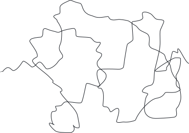
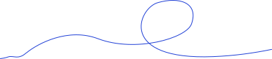
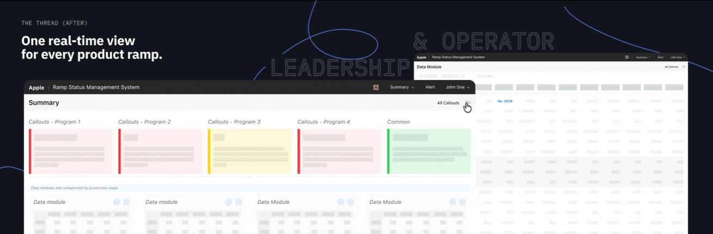
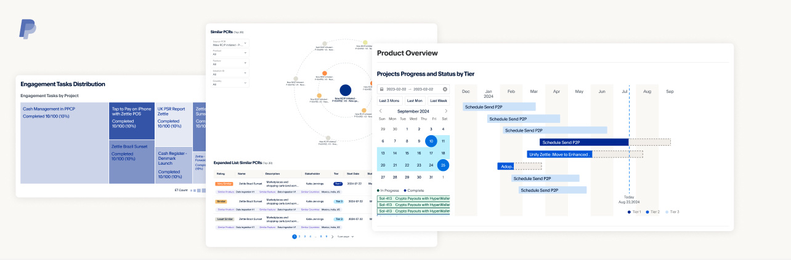
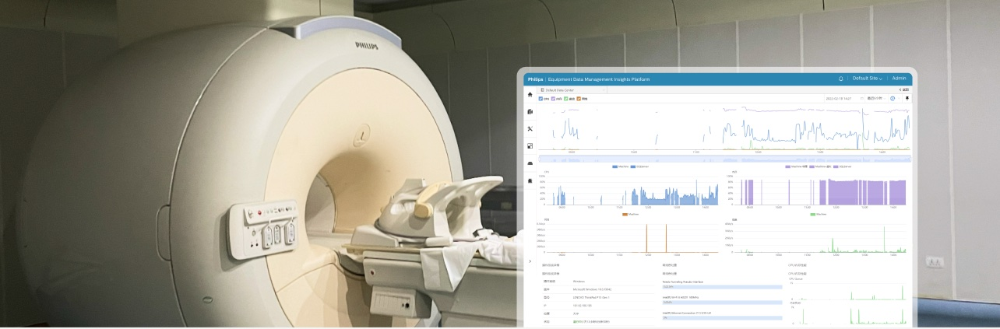
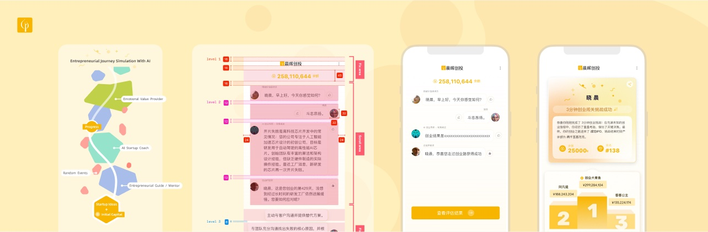
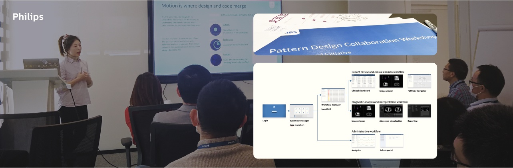

作品集 2026
切换语言 (Switch to English)复杂系统，
抽丝剥茧 逐步拆解。
我是李林溪，一名专注复杂系统的高级用户体验设计师。我的工作常落在商业、技术与人的需求彼此交缠的地方——在行业标杆级的供应链、长生命周期的医疗系统和企业级金融科技中，把棘手而混乱的问题，转化为值得信赖、用起来自然的数字产品。
Ramp Health 项目
现状
每一款 Apple 新品发布前，都要经历提产爬坡：在数月之内，产量从试产逐步提升至满产。爬坡数据一直存在，却分散在彼此独立的来源中，以静态快照的形式汇报。管理层难以及时看到风险预警，运营人员则要一遍遍手工重复汇报。Ramp Health 系统需要把这些数据汇聚成一个完整、实时的视图，让每个团队都能专注于管理提产，而不是被数据追着更新。

混乱（改进前）
不确定性高
症结（定义问题）

运营人员与管理层之间，缺少一个共享的提产爬坡视图。
脉络（改进后）
一个实时视图，可以查看所有在产产品
管理层一眼定位风险
运营人员一键标记问题、一键确认数据
提产完成度报告在系统内直接生成

工作与成果
更新之后提产爬坡数据整合在同一个系统中，进度汇报从每周快照变为分钟级更新。管理层一眼就能看到跨产品的实时风险预警；运营人员在系统内即可一键更新和上报数据，不必再手工重做 100 多页的报告。关键的设计决策包括：以扫读为先的概览页、尽量减少手动步骤的数据同步，以及贯穿 18 个模块的统一设计语言。
我的角色
独立设计 → 双人
独立主导 0→1 的 UI/UX 设计架构，随后与另一位设计师共同扩展设计。
项目成果
已上线
一期已被业务团队采用，用于管理今年的新品提产爬坡。
干系人管理
11+ 人
与产品经理、部门负责人及开发团队协同对齐。
项目周期
7 个月
设计框架延续至二期。
精选作品

风险与控制管理辅助平台
现状
要制定合适的合规策略，需要投入大量精力在不同业务层级之间检索、比较、组合并模拟各类风险与控制措施。
设计
与研发团队协作，为以可视化辅助决策的合规策略平台，进行 UI/UX 设计。

放射科设备数据管理系统
现状
大量医疗设备缺乏数字化管理方式，高价值设备的数据彼此分散，增加了科室主任在设备管理上的难度和成本。
设计
交付放射科的设备数据管理系统设计，已在 10 余家医院部署落地。

AI 模拟创业挑战游戏
现状
晨晖创投希望在官网推出一款创业历程挑战游戏，由 AI 引擎模拟创业环境，加强公司与科技创业者之间的交流。
设计
在前端开发、数据科学、风险投资专业知识与品牌形象之间，找到 UI/UX 的最佳平衡点。

大屏显示交互模式
现状
面对用于管理数据监控和效果展示的大尺寸壁挂显示屏，现有基于网页端和移动端的标准设计系统已不再适用。
设计
为医疗管理中的大屏看板制定设计模式，并应用于实际项目；项目中还定义了医疗软件中六类常见的任务类型。
其他项目
我的工作方式
步骤 01
带着好奇心设计
一定程度的复杂使得数字系统可以保持稳定和韧性，在着手设计之前需要了解业务特性。在 Apple 供应链项目中，我和 PM 们一起讨论弄清哪些数据和环节真正重要，并用业余时间考取了供应链管理师证书以更好的理解业务。
步骤 02
找到症结
复杂系统往往牵涉众多干系人。工作中我会尝试区分哪些设计可以由我决定、哪些需要确认，并尽早让干系人参与进来。借助草图，一起厘清需求讨论解决方式。
步骤 03
理出脉络
把每一版设计方案与更新用图像化的方式呈现，持续收集各相关方的反馈——最终找到平衡，满足每一位干系人的不同需求。
步骤 04
让它持续运转
我确保设计与业务一同成长，而不是孤立存在。离开 Ramp Health 项目后，我搭建的设计框架和组件规则仍在沿用。
奖项与专利
红点至尊奖 · iF 设计奖
飞利浦猫头鹰婴儿监护仪
配套软件的 UI/UX 设计——通过实时视频流和摇篮曲设置，家长可以轻松查看宝宝情况和哄睡。
图形用户界面外观设计专利
医疗系统事件轴设计
负责 UI/UX 设计——确保多条医疗事件记录中的必要细节可在同一视图内一目了然地呈现。
红点年度设计团队
飞利浦体验设计团队
曾作为成员在获殊荣的上海设计团队工作五年
红点设计奖 · iF 设计奖
飞利浦空气净化器除醛系列
LED 显示屏 UI/UX 设计，让空气净化流程变得易于用户理解和掌控
红点设计奖 · iF 设计奖
飞利浦健康电饭煲系列
针对两款电饭煲产品，进行 LED 及 TFT 显示屏的 UI/UX 设计，以及实体产品上按键交互设计。